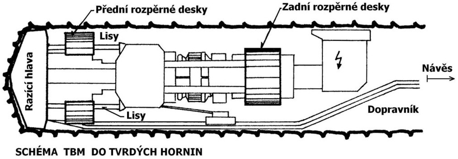
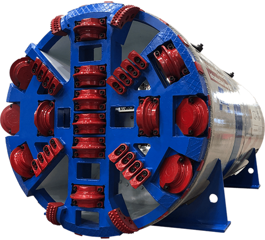

V dnešní době existuje celá řada metod tunelování. Je proto nutné je rozdělovat podle jejich principů, na kterých jsou založeny. Jedno z jednodušších dělení vychází z organizace ražby a rozlišuje dva typy postupů: cyklický způsob postupu prací a kontinuální postup tunelování. Oba typy využívají podmínky dočasné stability horniny, dokud není výrub zajištěný výztuží. K cyklickým metodám patří například metoda NRTM.
Ke kontinuálním metodám se řadí například strojní metoda TBM (z anglického Tunnel Boring Machines). Stroj rozpojuje horninu pomocí rotující razící hlavy, která je hnaná do čelby vysokým přítlakem. Přítlak je umožněn díky upnutí stroje v příčném směru. Toho je dosaženo díky rozpěrným deskám, které se upnou do výrubu, nebo štítovým lisům, které se upínají do vystavěného ostění. Schéma je znázorněno na obrázku níže.

Na razících hlavách jsou osazeny pracovní nástroje určené k rozpojování horniny. Nejčastěji jsou používány diskové rotační dláty (viz obrázek níže). Tyto disky mají řeznou hranu z tvrdokovu a pod velkým přítlakem rozpojují horninu díky kombinaci soustředného tlaku a příčného tahu. Díky tomu je metoda velmi šetrná k horninovému masívu, což z ní činí velmi vhodný způsob pro pevné horniny. Naopak při použití v nedostatečné kvalitě horniny hrozí zaboření razící hlavy (právě velkým přítlakem) nebo uvíznutí celého stroje v případě zaboření rozpěrných desek. Jak již z obrázků vyplývá, konstrukce strojů umožňuje tunelování pouze pro kruhový profil tunelu nebo profil velmi blízký kruhu. Rozměry již vyrobeného stroje navíc nelze měnit, a proto je jeho použití jednorázové, případně by bylo možné pouze pro ražení tunelu se shodnými rozměry a geologickými podmínkami. Pořizovací náklady na toto strojní vybavení jsou velmi vysoké. Proto je, zejména pro méně významné malé tunely nebo štoly, opravdu důležité zvážit, zda se z ekonomického pohledu použití této metody vyplatí.

Samotná ražba metodou TBM je extrémně rychlá. V teoretické rovině se rychlost pohybuje v jednotkách m/hod a řádově je schopna postoupit o 10 m za směnu. Skutečná rychlost je ale nižší kvůli nutnosti odvozu značného množství rubaniny (rozpojené horniny), údržbě stroje a zajišťování příčného upevňování. I přesto se ale řadí k nejrychlejším způsobům tunelování. Ve srovnání se zmíněnou metodou NRTM je dokonce až 3x rychlejší.
Na základě popisu metody a obrázků vyberte pravdivé tvrzení.